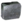
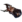
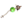

Lua
- Wpis w Kodeksie - Złote pierścienie otaczają i zamykają w swych objęciach opustoszałe Księżycowe krajobrazy - zabytkowa architektura, znacząca dawną maestrię wiodącej niegdyś prym cywilizacji Orokin nad wszelkimi technologicznymi i naturalnymi zagadnieniami. Świetliste sale spajające to, co ocalało z rąk wrogów, pozostają puste od chwili, gdy tamta era dobiegła kresu.
- Surowce które występują na planecie:
-  Ferryt
 Rubedo
Rubedo-  Neurody
-  Ampułka Detonitu
- Występujący boss: Brak
Fakcje i typy wrogów
- Technik Corpus
- Załogant
- Elitarny Załogant
- Załogant z Elektropałką
- Załogant Snajper
- MOA Anti
- MOA
- Sejsmiczny MOA
- Dron Miniarz
- Dron Oxium
- Dron Zbieracz
- Dron Tarcz
 Grineer
Grineer- Rzeźnik
- Obdzieracz
- Szturmowiec
- Tarczownik
- Żołnierz
- Dowódca
- Ciężkozbrojna
- Siekacz
- Conculista
- Batalista